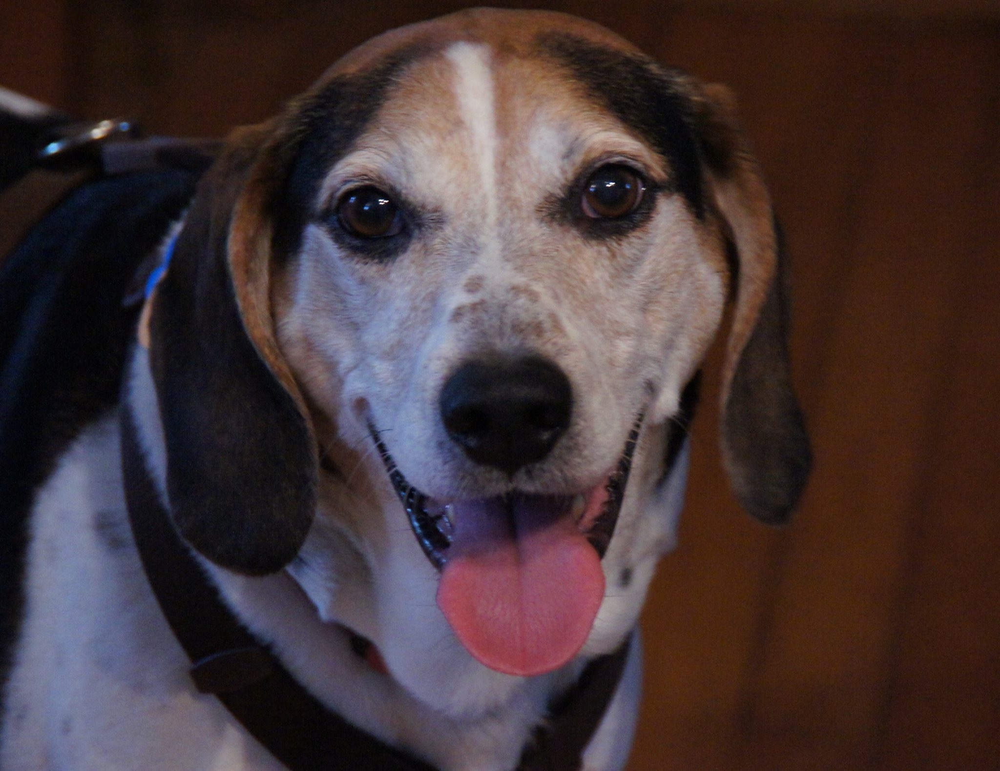

Sammus
In 2011 my family adopted my dog from the Humaine Society in Bangor. His name is Sammus and it was given to him from the shelter. We are unsure of his age but it was estimated that he was 5 years old when we got him. This means that he turned 12 this October. He loves to go for walks and has a powerful nose that makes him run away all the time. He is a walker beagle mix and he is the nicest dog you'll ever meet.